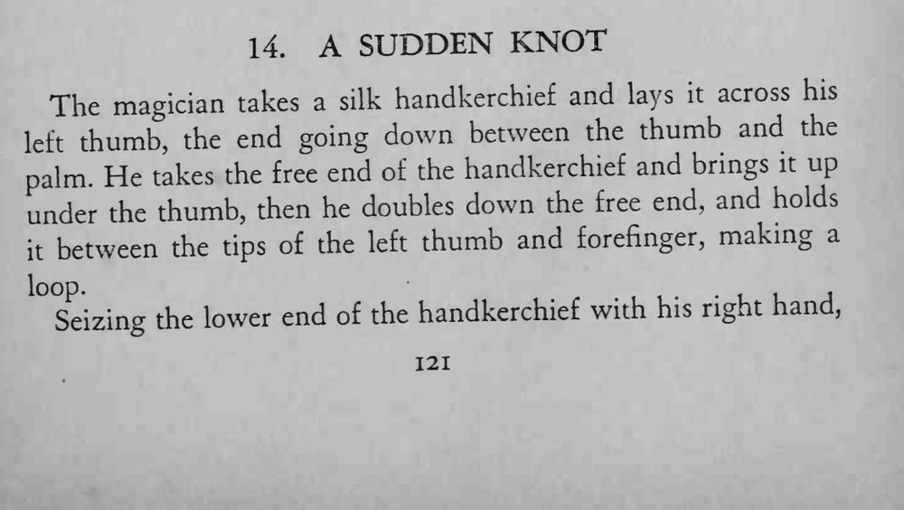
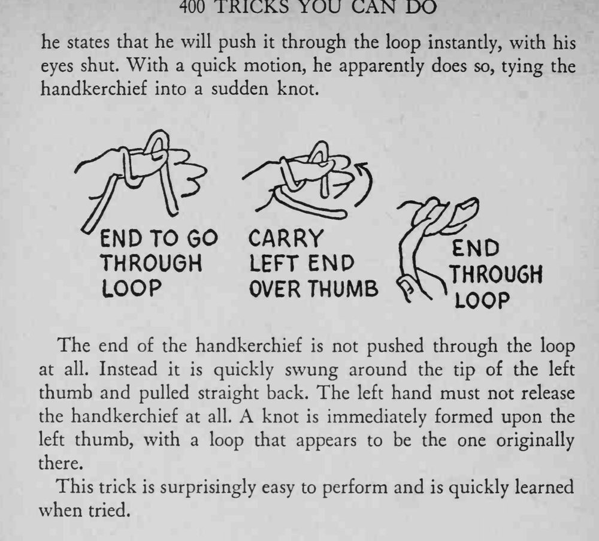

魔术师把丝巾搭在拇指上，说闭着眼睛也能一瞬间打上结；手一动，丝巾上果然出现了一个结。
左手全程不能松开，绕拇指和回拉要一气呵成。


The magician takes a silk handkerchief and lays it across his thumb, the end going down between the thumb and the left palm. He takes the free end of the handkerchief and brings it up under the thumb, then he doubles down the free end, and holds between the tips of the left thumb and forefinger, making a Seizing the lower end of the handkerchief with his right hand, he states that he will push it through the loop instantly, with his eyes shut. With a quick motion, he apparently does so, tying the handkerchief into a sudden knot. The end of the handkerchief is not pushed through the loop at all. Instead it is quickly swung around the tip of the left thumb and pulled straight back. The left hand must not release the handkerchief at all. A knot is immediately formed upon the left thumb, with a loop that appears to be the one originally there. This trick is surprisingly easy to perform and is quickly learned when tried.